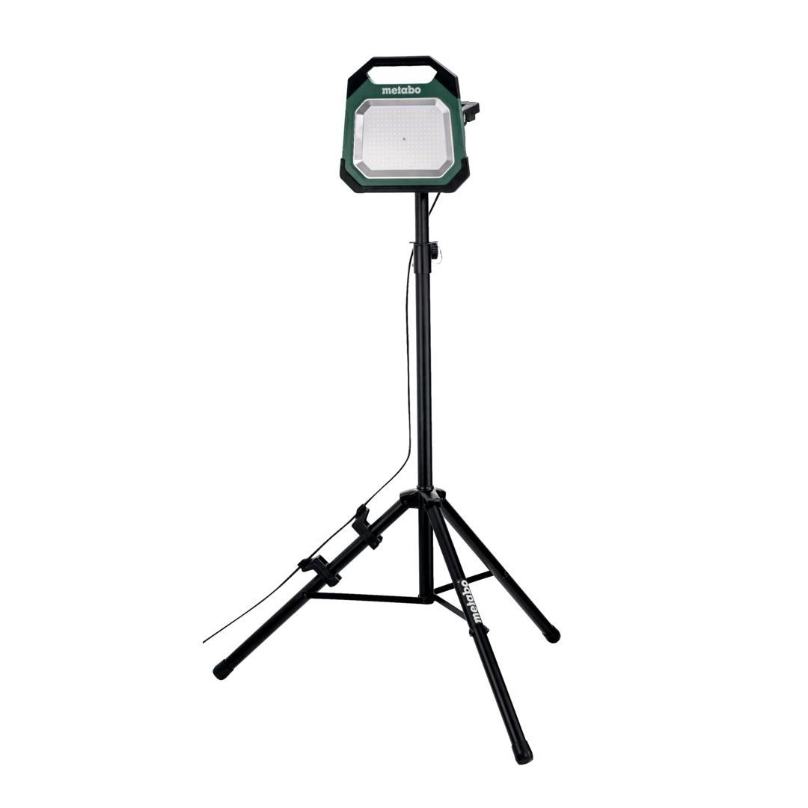
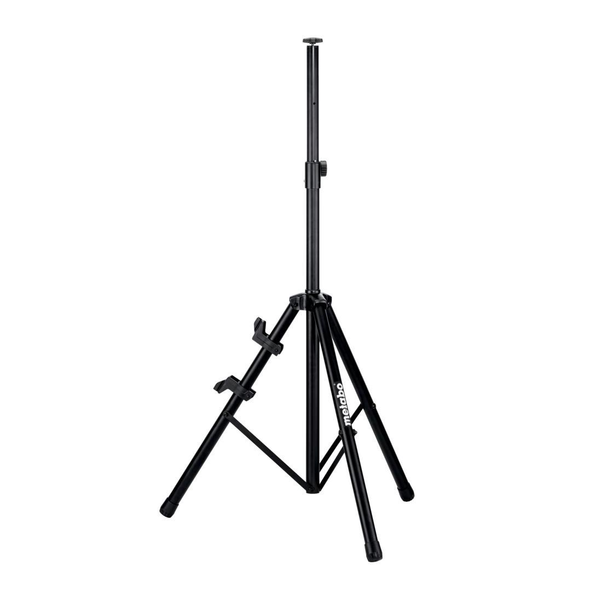
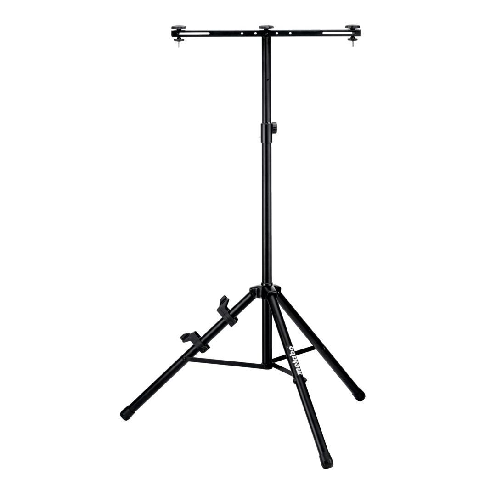
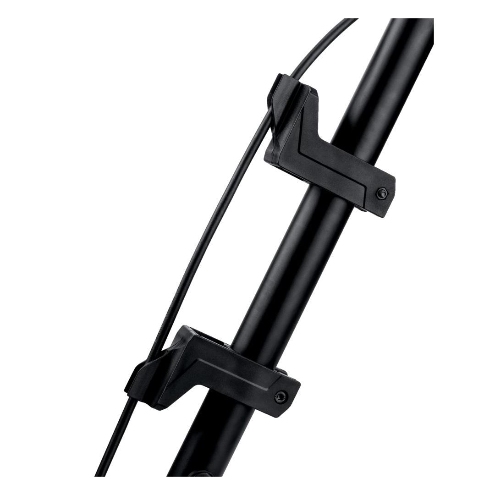
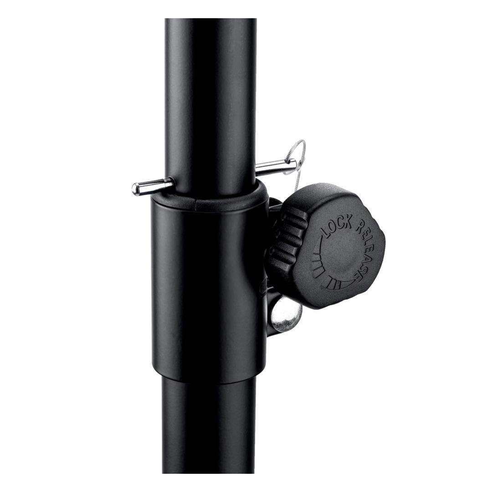

Metabo | TRIPOD FOR LIGHTS WITH DOUBLE BRACKET
623723000








Product Description
- Infinitely adjustable in height from 1.10 to 1.80 m
- Good stability thanks to non-slip rubber feet
- Including double bracket for fixing two lights on the tripod
- Weight: 5 kg
- Connecting thread: M8